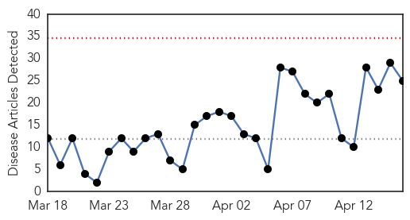
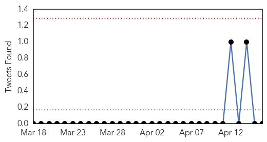

30 Day Trends
Web: 0 alerts, 0 warnings
Twitter: 0 alerts, 0 warnings
Top Articles:
- 0.972
- Untitled Article
- 0.970
- 'H7N9 vaccine may take months'
- 0.960
- Dog flu cases linked to deadly outbreak reported in Indiana; learn what to watch for
- 0.956
- Gynaecologists recommend the influenza vaccination for pregnant women
- 0.942
- Hong Kong medical experts split over benefits of flu vaccinations for children
- 0.895
- Wisconsin Veterinary Diagnostic Lab monitoring bird flu outbreak
- 0.892
- Canine Influenza Virus From Asia Has Started An Epidemic In The U.S.
- 0.875
- Canine flu outbreak hits over 1,100 Chicago-area dogs, including six deaths
- 0.870
- Chicago-Area Dog Flu Outbreak Rises To Over 1,000 Cases
- 0.867
- Wisconsin reports H5N2 in turkeys, backyard poultry
- 0.813
- UPDATE: Walker declares state of emergency over bird flu
- 0.805
- Influenza vaccinations begin for Capital & Coast DHB staff
- 0.801
- Dead Birds In Tank Create Flutter
- 0.773
- Protecting Dogs Against Canine Influenza - Story
- 0.751
- April 15, 2015 Archives
- 0.751
- April 15, 2015 Archives
- 0.751
- April 15, 2015 Archives
- 0.745
- Bird flu spreads to Iowa turkey flock; 6th Midwest state
- 0.647
- Bird flu outbreak could head eastward with fall migration
- 0.645
- Bird flu outbreak could head eastward with fall migration
- 0.644
- Bird flu outbreak could head eastward with fall migration
- 0.634
- Deadly dog flu spreading
- 0.562
- Questions about vaccine as dog flu concern continues
- 0.536
- Avian flu uncertainty has turkey farmers on edge
- 0.510
- Bird flu scare in Telangana, active surveillance put in place in city
Top Tweets:
-
No tweets found for Apr 16, 2015
Web/News Articles
Tweets
Article Locations